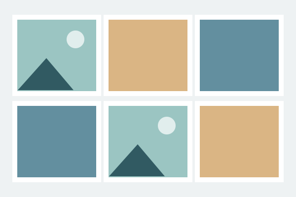

Dự án thực hành
Học qua từng sản phẩm.
Ba bài tập tiêu biểu trong hành trình học HTML và CSS của tôi.
Box Model
Thẻ sản phẩm
Thẻ tai nghe gồm ảnh, tên, giá và nút thêm vào giỏ hàng; luyện tập khoảng cách, viền và display.
CSS Grid
Bố cục Blog
Bố cục blog với header và footer phủ toàn chiều ngang, nội dung chính và sidebar theo tỷ lệ hai phần một.

Flexbox
Thư viện ảnh
Thư viện tám ảnh tự động xuống hàng và co giãn theo màn hình, sử dụng flex-wrap, gap và object-fit.